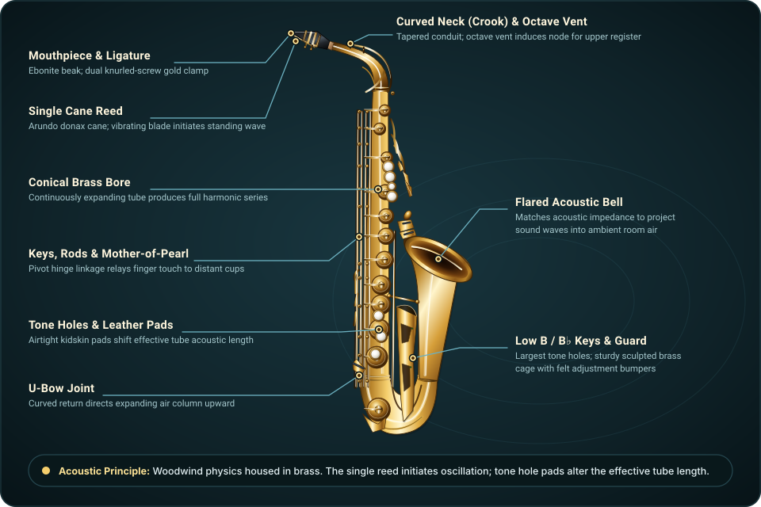
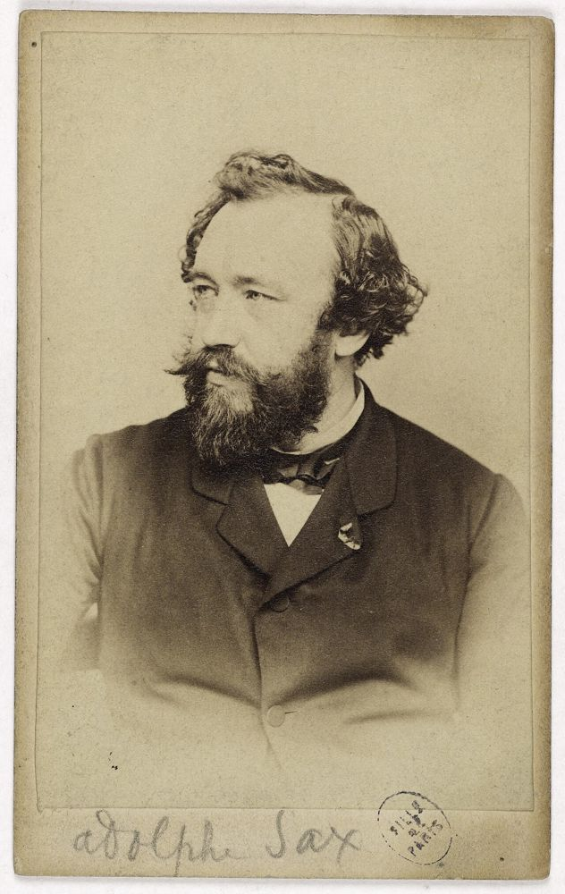
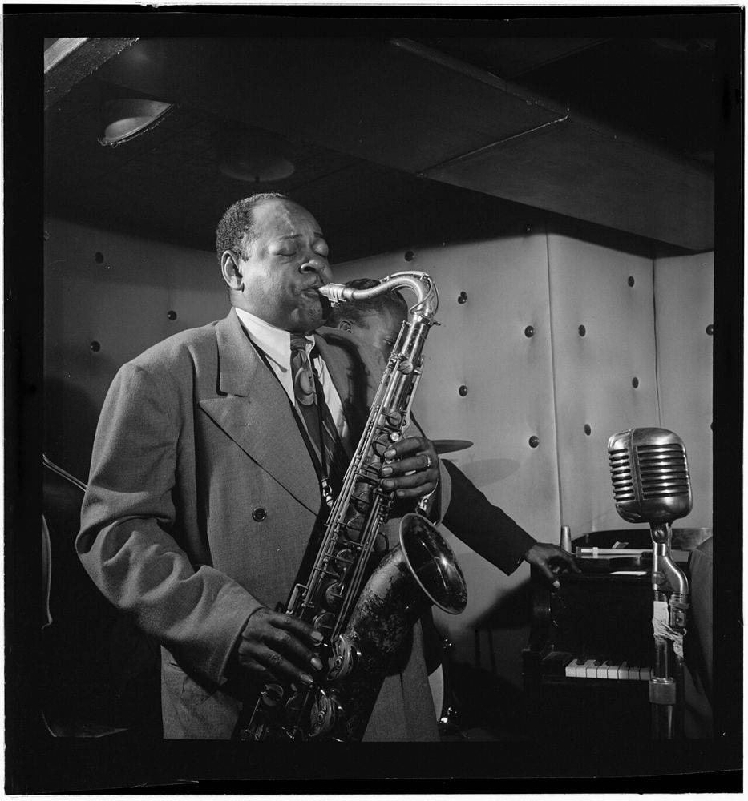
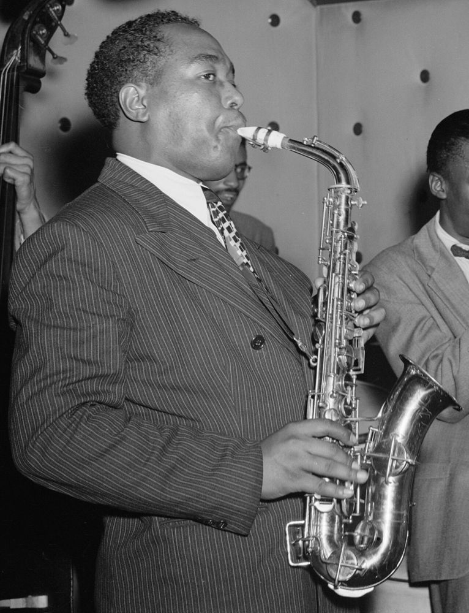
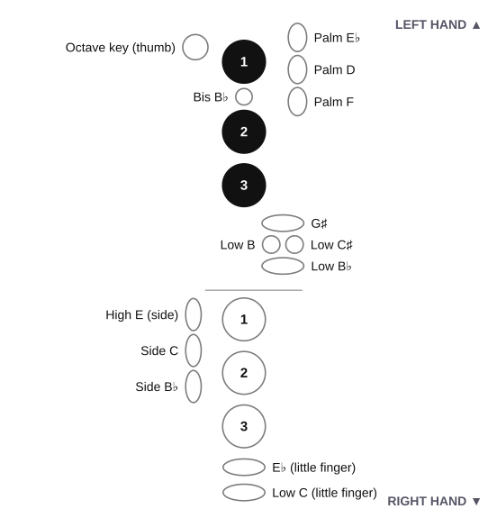

,_(facteur_d%27instruments,_cr%C3%A9ateur_du_saxophone),_PH56339.jpg){kind=link}
,_New_York,_N.Y.,_ca._Sept._1946)_(LOC)_(4843746292).jpg){kind=link}
_(cropped).jpg){kind=link}

1 · Support and posture
Adjust the strap so the mouthpiece meets your mouth without bending your neck. Sit or stand tall with relaxed shoulders. Left hand goes above the right; fingertips rest on the pearl keys.
Music · Grades 6–12 · Learn by listening and doing
A brass body, a woodwind voice. Follow the vibration from reed to bell, put B–A–G under your fingers, and turn those first notes into a phrase.

Use comfortable breaths. Rest immediately if you feel dizzy or strained.
Advance rule: three relaxed, even repetitions before adding range or tempo. Tone and timing come first.
01 · An inventor’s new voice
Belgian instrument maker Adolphe Sax, working in Paris, developed the saxophone in the 1840s and patented it in 1846. He sought a strong voice that could connect the wind sections of a band. His design combined a single-reed mouthpiece with a widening, conical metal tube and a system of keys.

Belgian instrument maker Adolphe Sax moves to Paris. The composer Hector Berlioz writes a newspaper article praising his new instrument, which can play loudly like brass or softly like a woodwind.
In a public contest in Paris, a band using Sax’s instruments outplays a traditional band. French military bands adopt the saxophone, which gives it its first steady job.
Sax patents a whole family of saxophones, from small and high to huge and low, all with a single reed, a cone-shaped metal tube and a system of keys.
Sax’s patent runs out. Other instrument makers start building saxophones, which helps the instrument spread beyond France.
Adolphe Sax dies in Paris, poor after years of lawsuits with rival makers. The saxophone is still mostly a band instrument.
Maurice Ravel gives the tenor and soprano saxophones solos in Boléro, one of the most played orchestral pieces ever written.

Coleman Hawkins records “Body and Soul,” improvising a whole new melody over the song’s chords. It becomes a hit and shows that the tenor sax can lead a band.

Alto saxophonist Charlie Parker records “Ko-Ko,” a landmark of bebop: fast tempos, complex chords and long, twisting solo lines.
John Coltrane records Giant Steps, whose chords change so quickly that it is still a test piece for jazz players today.
The saxophone plays in concert bands, jazz groups, soul and funk horn sections, pop songs and film scores. A style comes from the player’s choices, not just the instrument.
Predict: if the body is brass, should we classify it with the trumpet? Test that idea in the sound lab: what actually starts vibrating?
History source: The Metropolitan Museum of Art: Celebrating Sax.
02 · Predict → listen → explain
The flexible single reed at the mouthpiece responds to the air and pressure oscillations in the tube. This coupled vibration makes the saxophone a woodwind, even though the body is usually brass. Closing more tone holes generally lengthens the effective air column and lowers pitch. The octave mechanism helps select a higher resonance; it does not cut the tube in half.
Predict: will written G sound higher or lower than written B? Select each note in the fingering lab to hear the difference.
Listen for the gaps between tongued notes. Then choose slurred and compare. On a real instrument the tongue releases the reed gently; slurring keeps the air moving while fingers change the note.
Model limit: all audio here is an electronic approximation, not a saxophone recording or a test of your breath, tone, or embouchure. Dynamics change modeled amplitude; real players also change tone color and intonation.
03 · From screen to instrument
Adjust the strap so the mouthpiece meets your mouth without bending your neck. Sit or stand tall with relaxed shoulders. Left hand goes above the right; fingertips rest on the pearl keys.
With a teacher, moisten and align your own reed on the mouthpiece and secure the ligature. Rest upper teeth on the mouthpiece; cushion the reed with the lower lip over the lower teeth. Seal the corners gently. Avoid biting.
Take an easy breath and send steady air. Try a gentle “too” release for a note start. Hold B for four comfortable counts, rest for four, then repeat. Stop and reset if you feel dizzy or strained.
Do not treat one tuner number as a diagnosis. A conventional classical alto mouthpiece often centers near concert A5, but concert G–A is a useful teaching range because mouthpiece, reed, voicing and experience all affect the result. Mouthpiece plus alto neck often centers near concert A♭. On the assembled alto, releasing the ordinary finger keys gives written C♯, sounding concert E—not written C. Written C sounds concert E♭. See Yamaha’s educator guidance on mouthpiece pitch.
If a pitch is sharp, biting is one possible cause, but tongue position, mouthpiece placement, reed and equipment also matter. Use steady supported air, keep the throat and jaw comfortably open, and change one variable at a time with a teacher. No sound? Ask a teacher to check reed placement, air and the mouth seal. Use your own mouthpiece and reed; follow the instrument’s cleaning instructions, swab after playing, and never force key mechanisms.
Success criterion: three relaxed four-count notes with silence between them. Clear starts and an even sound matter more than volume or speed. Without a saxophone, count and mime the finger changes.
03b · Care and moisture
Your breath carries water vapor. As it cools inside the tube, it condenses into droplets on the walls, in the neck and mouthpiece, and under the pads. Moisture left in the horn can swell a reed, keep pads damp and sticky, dull the sound, and encourage grime and mold. A two-minute routine after playing prevents most of it.
Take the reed off, wipe it gently with a clean, dry cloth, and slide it into a reed case or guard so it dries flat. Do not leave it on the mouthpiece. Wipe the mouthpiece and let it air-dry; ask a teacher before washing it, and use only lukewarm water (never hot).
Pull the neck swab or a small neck brush through the neck. Lift out the water that collects, especially the beads in the octave-key pip area, then dry the outside with a soft cloth.
Drop the weighted end of the body swab into the bell, hold the cord, and pull the swab up through the body once or twice, never forcing it. Wiggle it gently if it snags, so it cannot get stuck on a key or tube. Do not leave the swab inside the case.
If a pad looks wet or a note sticks, slip a clean, non-powdered cleaning paper or a pad saver between the pad and tone hole, press the key gently, and pull it out. Wipe fingerprints off the keys with a soft, dry cloth. Never bend a key, oil it yourself, or use polish near the pads.
Gurgling or a “spitty” note? Water is pooling in a tone hole or the octave pip. Lower the bell slightly, finger the stuck note, and blow a short burst of air through it with the key pressed, or ask a teacher to help. Wiping the pad dry fixes most of these problems.
A pad that stays sticky or smells musty needs a repair tech, not more wiping. Take it to your teacher so a technician can check the pad. Do not pull on it.
Storage: put the horn in its case with the strap and swabs out, close the latches, and keep it away from heaters, cold cars and direct sun. Big swings in heat and humidity are hard on pads and cork.
Check yourself: list the five steps in order (reed, mouthpiece, neck, body, case) and say which one removes the most moisture. Then explain why a damp reed left on the mouthpiece is a problem. Without a saxophone, mime the swab pull-through on a ruler.
04a · Know your keys
The big idea: B = 1 finger, A = 2, G = 3, then the right hand adds F, E, D. Everything else is a helper key.
A saxophone looks like a thicket of metal, but your hands only touch a small set of keys. Learn them in groups: thumbs, left hand, right hand, then the little fingers. Fingers are numbered 1 = index, 2 = middle, 3 = ring in each hand. The left hand sits on top and the right hand below; the three big pearl keys under each hand are the “main keys.”

| Hand · finger | Plays (keys above it down) | Coaching tip |
|---|---|---|
| Left · 1 (index) | B alone | The first key you learn. Cover the pearl with the soft pad, not the tip. |
| Left · 2 (middle) | B + this = A. Alone: C | Alone, this key plays C (no thumb for C5). |
| Left · 3 (ring) | B + A + this = G | The ring finger is weakest: practise G until it covers cleanly. |
| Right · 1 (index) | LH 1–2–3 + this = F | Left hand stays down. Airy F? Check the left ring finger. |
| Right · 2 (middle) | …+ this = E | Alone with LH 1–2–3 it plays F♯: a common mix-up. |
| Right · 3 (ring) | …+ this = D | All six down is the lowest note without pinky keys. Play it softly to find leaks. |
Left hand: thumb, index, palm, pinky. Right hand: side keys, pinky.
Left: rests on the thumb rest, rolls onto the octave key (T) for the same fingering one octave up. Right: under the hook; plays no key.
Tip: Let the strap carry the weight.
LH 1 plays B. The small bis B♭ sits just below: roll the same finger onto both for B♭. Alt high F is above. Palm keys (high D, D♯/E♭, F) are for notes above C6, later.
Tip: Roll, don’t jump, for bis B♭.
Four keys in a cluster: G♯ on top, then low C♯, low B and low B♭. G♯ comes first (LH 1-2-3 + G♯).
Tip: The pinky slides between keys; it doesn’t lift.
Under the side of the right index, top to bottom: side E, side C, side B♭. Side B♭ eases A ↔ B♭ (LH 1-2 + side B♭). High F♯ and alt F♯ come later.
Tip: Let the hand drift, not the wrist.
Two keys: E♭ (also D♯) on top, low C below. With all six fingers down, add low C for written C or E♭ for D♯.
Tip: Up for E♭, down for low C; slide.
Left hand plays B A G; right hand plays F E D: the same shape, one under the other. Know B-A-G and you know the top half of the scale.
Tip: Mime a scale in a mirror.
Try it: eyes closed, a partner says “B… A… G… F…”; mime each fingering, then check. Then open the Fingering Studio in Build mode.
04b · Fingering studio
Choose a note → see the fingering → hear it. Choose Scale to watch the fingerings change as it plays.
Press Release Changes from the note below · Click diagram to enlarge
Explore the staff: click or tap a line or space to choose its natural note. With the staff focused, use ↑ and ↓ to move between notes.
Ready. Play the scale or step through its notes.
Explore shows the fingering. Build lets you try the keys.
Tap a note on the staff. The key map and saxophone show what to press.
Start with Note → choose B → Hear note. Try A and G next. Scale plays one written octave while the diagram follows each note. Audio is synthesized; the alto drawing remains the same across instrument choices. Build and Challenge assess key choices only.
Start: B → A → G. Only your left hand changes. Then compare C5 (LH 2 alone) with C6 (LH 2 plus T, the octave key). The same pitch can have more than one useful fingering: compare bis B♭ and side B♭ before choosing a fast passage.
Instrument reference: Yamaha YAS-280 product photographs. Illustrations: ClassroomOS, original SVG artwork; manufacturer photographs are linked as references, not reproduced. The alto illustration remains the same when changing instruments; that selector changes sounding pitch.
This compact reference pairs each written note with its staff position and abstract key pattern. Solid shapes mean press; open shapes mean release. Click the sheet to enlarge it for study or projection; on a small screen, swipe across the chart.
Explore written B♭3 through C6, including sharps, flats, and three common B♭ fingerings. Filled key buttons mean press; open buttons mean release. This chart shows player touches, not every linked pad. The original illustrations follow Yamaha YAS-280 alto reference photographs: the pearl touches sit over a detailed body and key mechanism. Hidden thumb, side, and little-finger touches appear in labeled enlarged detail views. These are teaching illustrations, not dimensioned 1:1 drawings.
Scope: common fingerings through C6; palm-key notes, altissimo, and instrument-specific alternates are outside this studio. Low A needs an instrument with a low-A key. Browser challenges assess key choices, not air, embouchure, tone, or intonation.
Reference: Yamaha’s saxophone fingering chart →05 · Two names for one sound
Written pitch is what a saxophonist reads. Concert pitch is what you hear and what a piano plays. The same basic fingering works across the saxophone family while tube length changes the sounding pitch.
| Saxophone | Concert pitch | Sounds below written pitch |
|---|---|---|
| Soprano in B♭ | B♭4 | Major second · 2 semitones |
| Alto in E♭ | E♭4 | Major sixth · 9 semitones |
| Tenor in B♭ | B♭3 | Major ninth · 14 semitones |
| Baritone in E♭ | E♭3 | Major thirteenth · 21 semitones |
Test: select written C5 above, change alto to tenor, and compare the readout and sound. To join a piano playing concert B♭, an alto player reads G; a tenor player reads C. Match the octave too.
06 · A phrase you can read
The treble staff’s lines from bottom to top are E–G–B–D–F; spaces are F–A–C–E. A quarter note lasts one beat here, a half note two, and a whole note four. A rest is measured silence. All examples use 4/4: four quarter-note beats per bar. Say the counts before playing.
Ready. Count 1–2–3–4, then begin.
Practice ladder: listen once → count and mime → play slowly → hide note names → read one note ahead. The phrase buttons let you isolate one note and see its fingering. The Ode to Joy melody is public domain; this short teaching arrangement is made for this lesson.
07 · Melody inside harmony
In written C major, I = C–E–G, ii = D–F–A, and V = G–B–D. These are the root, third and fifth of each chord. Roman numerals locate a chord in the key; lower-case ii means minor. A scale uses all seven degrees; an arpeggio follows chord tones. Ordinary saxophone playing produces one note at a time, so our route is a melody through the harmony.
This extension introduces F♯ or B♭ in other keys: the fingering studio now follows these notes during playback. Compare the main-key F♯ fingering and the bis or side B♭ options with a teacher. The selected saxophone determines concert pitch for every playback.
Find common tones: in C, ii and V share D; V and I share G. Build a smoother phrase by keeping a shared note before moving to the next chord’s nearest tone. Then transpose the same Roman route to G.
08 · Make a phrase, leave room to breathe
Each slot is one quarter-note beat. Choose from the first five notes or a rest. Build two bars; use a rest to plan a breath. Try a repeated idea in bar one and a changed ending in bar two.
Your phrase and reflection save in this browser when storage is available.
09 · Explain and transfer
Performance exit ticket: read your two-bar phrase at a comfortable tempo, name one finger change, and explain the difference between written and concert pitch. On a real instrument, ask a partner to describe your note starts and steady air; this browser cannot assess them.
Embouchure: the mouth’s setup around the mouthpiece. Articulation: how a note starts and connects. Resonance: a favored vibration pattern of the air column. Transposition: shifting every pitch by a fixed interval. Arpeggio: chord tones sounded in sequence.
Next session: long tones, teacher-guided octave changes, a complete C-major scale, and a phrase transposed to a second key. This lab does not teach altissimo, multiphonics, or every alternate fingering.